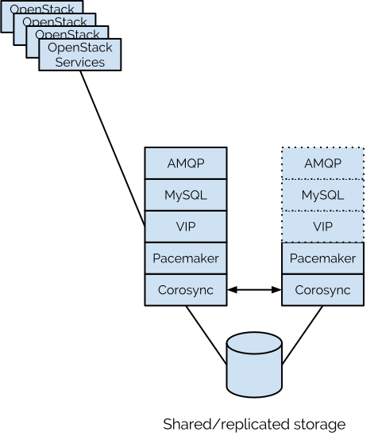
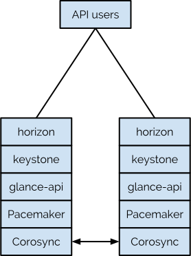

High Availability Update
OpenStack High Availability in Grizzly and Beyond
Who the $?#% is this guy?

Infrastructure
Infrastructure HA is high availability for OpenStack Infrastructure Services.
Think database, AMQP server, API services, etc.
We have to consider at least 5 OpenStack node types for Infrastructure HA.
Cloud Controller
API Node
Network Node
Compute Node
Storage Controller
All use the same high availability stack, just with different configurations.
We have reference configurations for Pacemaker and OpenStack HA, covering all OpenStack Infrastructure Services.
Example: Cloud Controller HA
Example: API Node HA
Nova
Guest high availability has also been addressed in the Grizzly cycle.
The --host= and--resume_guest_state_on_host_boot hack
Issues: breaks live migration, unsafe with volumes
Host evacuation
nova evacuate guest target
A misnomer?
When do you commonly evacuate?

Photo credit: NOAA (Public Domain)

Photo credit: FEMA (Public Domain)
evacuate issues:
per-guest, per-host, no automation, and only supported from a down host.
Also: no evacuation support in Horizon (for Grizzly).
But you probably guessed that.
VM Ensembles
A means of grouping guests so Nova can schedule them in a resilient fashion.
Quantum
Quantum is an infrastructure service that can use the same HA approach as all others for Active/Passive failover.
Works well for quantum-server and L3 agent.
Has minor limitations for DHCP agent.
However, pure Active/Passive approach does not scale well.
A patch to support multiple DHCP and L3 agents addresses this.
Other Stuff
Libvirt watchdog support in Nova and Glance
NFS, Ceph & GlusterFS integration in Cinder
(And a boatload of other drivers)
Cinder HA coming in Havana
And there is almost certainly stuff that I omitted.

You can vote this talk into the Portland OpenStack Summit!
Summit talk nominations open this week.